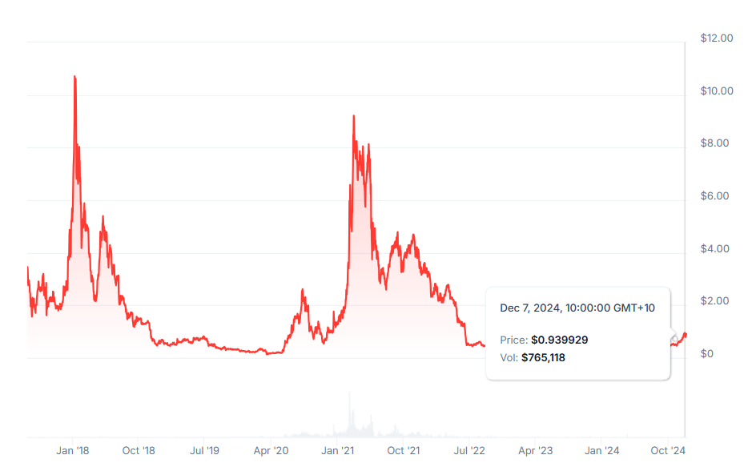
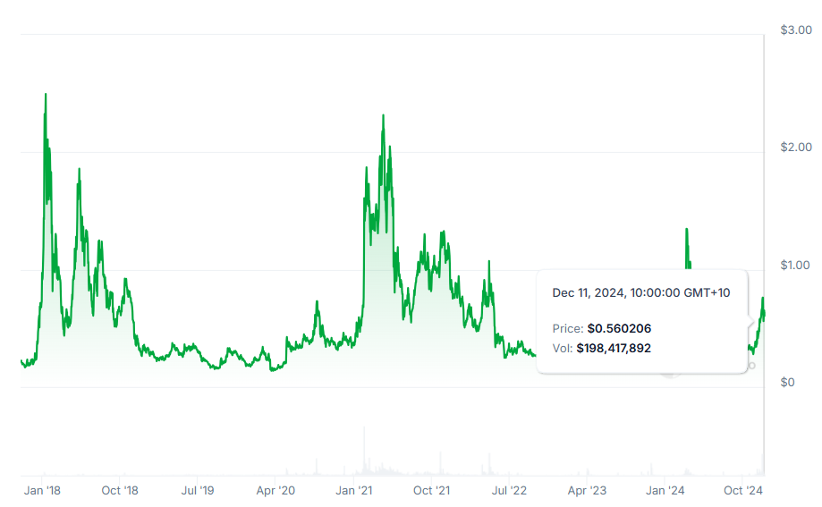
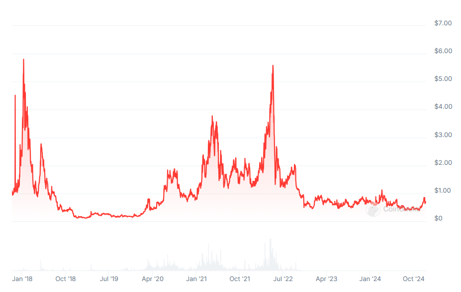
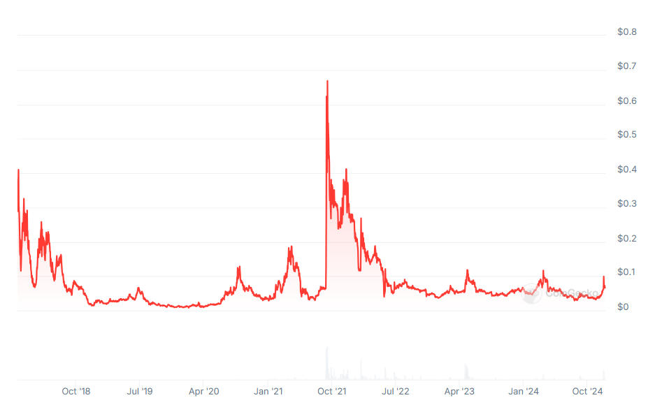

Decentralized Exchanges
A Chronological Analysis
Introduction
The development of decentralized exchanges (DEXs) represents one of cryptocurrency’s most fascinating evolutionary paths. This document traces that evolution year by year, examining four key aspects: protocol innovations, the evolution of trading intents, DEX token development, and the emergence of Miner Extractable Value (MEV). Each year brought significant advances that built upon previous concepts while solving new challenges.
2016: The Foundation Year
Protocol Innovations
EtherDelta emerged as the first widely-used decentralized exchange, introducing on-chain order books. This pioneering approach maintained order lists directly on the Ethereum blockchain, with each order specifying trading amounts and prices. While revolutionary, the system faced significant limitations due to its requirement for on-chain transactions for every order and cancellation, leading to prohibitive gas costs and limited liquidity.
DEX Tokens
EtherDelta operated without a native token, relying instead on direct smart contract interactions and trading fees. This tokenless approach was common in early DeFi projects, as the concept of protocol tokens for governance and incentivization hadn’t yet emerged.
2017: The Year of Market Making Innovation
Protocol Innovations
Two major protocols emerged this year, each taking different approaches to decentralized trading:
Automated Market Makers (AMMs): A New Paradigm
Before diving into specific protocols, it’s important to understand the revolutionary concept of Automated Market Makers. Traditional exchanges use order books, where buyers and sellers manually place orders at specific prices. AMMs fundamentally reimagined this process by using mathematical formulas and liquidity pools to enable completely automated trading.
In an AMM system, instead of matching buyers with sellers, users trade against a pool of tokens. These pools are funded by liquidity providers who deposit pairs of tokens (like ETH and USDC) into a smart contract. The AMM then uses a mathematical formula to determine the exchange rate between these tokens at any given moment.
The key innovation of AMMs is that they eliminate the need for order books and traditional market makers. When a user wants to trade, they don’t need to wait for a matching order – they can immediately trade against the pool at a price determined by the mathematical formula. As tokens are bought from the pool, their price increases according to the formula, and as they’re sold into the pool, their price decreases.
This system offers several advantages:
- Continuous Liquidity: Trading is always possible as long as there are tokens in the pool
- Predictable Pricing: Prices follow a predetermined curve based on the pool’s formula
- Permissionless: Anyone can provide liquidity or trade without permission
- Simplicity: No need to specify prices or manage orders
Different AMM protocols use different mathematical formulas to determine prices, each optimized for specific use cases. These formulas, often called “invariants,” maintain certain mathematical relationships between the tokens in the pool.
Bancor (June 2017)
- Introduced the first automated market maker (AMM) model
- Implemented a “constant reserve ratio” mechanism
- Created continuous liquidity for any token pair
- Established automatic price adjustment based on supply and demand
- Introduced protocol-owned liquidity
0x Protocol (August 2017)
- Built upon and improved the order book model
- Introduced off-chain order relay with on-chain settlement
- Developed sophisticated filler mechanisms for order execution
- Enabled cross-platform arbitrage and liquidity provision
DEX Tokens
The year 2017 marked a crucial turning point in DEX tokenomics with the introduction of two influential token models:
Bancor Network Token (BNT) served as the world’s first smart token, introducing several important concepts:

- Network Hub: BNT functioned as an intermediary currency for all trades within the Bancor network. When users wanted to exchange one token for another, the trade would automatically route through BNT, creating a unified liquidity network.
- Automated Price Discovery: The token worked with Bancor’s smart contracts to maintain continuous liquidity and automated price discovery through the constant reserve ratio mechanism.
- Protocol-Owned Liquidity: BNT introduced the concept of protocol-owned liquidity, where the token itself served as a reserve currency backing all trading pairs.
- Price Stability Mechanism: The smart contract automatically adjusted BNT supply based on market demand, attempting to maintain price stability through algorithmic market making.
- Liquidity incentivization: BNT was used for liquidity mining rewards, where liquidity providers would earn BNT tokens for contributing to pools.
The 0x Protocol Token (ZRX) introduced a different approach focused on governance and coordination:

- Governance Rights: ZRX holders could vote on protocol upgrades, parameter adjustments, and other important protocol decisions, establishing one of the first examples of on-chain governance in DeFi.
- Relayer Fee Payment: The token served as the primary medium for paying trading fees to relayers who facilitated order matching and execution in the 0x ecosystem.
- Staking Incentives: Market makers and relayers could stake ZRX tokens to earn additional protocol fees, creating an economic alignment between network participants.
- Cross-Platform Standardization: ZRX helped standardize trading fees and incentives across different platforms building on the 0x protocol, creating a unified economic model for the ecosystem.
These two token models influenced many subsequent DEX tokens, with projects often adopting and modifying elements from both approaches. The BNT model influenced later automated market maker protocols, while ZRX’s governance and fee-sharing approach became a standard feature in many DeFi protocols.
Trading Intents
The early form of trading intents emerged through 0x v1’s order format, which represented one of the first attempts to standardize how trading desires could be expressed on-chain. Each order was composed as a structured message containing specific fields that defined the exact parameters of the trade:
struct Order {
address maker; // Address creating the order
address taker; // Address allowed to fill the order (or 0 for anyone)
address makerToken; // Token being offered by the maker
address takerToken; // Token being requested by the maker
uint256 makerTokenAmount;// Amount of maker token being offered
uint256 takerTokenAmount;// Amount of taker token being requested
uint256 expirationUnixTimestampSec; // When the order expires
uint256 salt; // Unique number to prevent duplicate orders
}These early orders were signed messages that included several important characteristics:
Order Creation and Signing:
- Makers would construct an order with the above parameters
- The order would be signed using the maker’s private key
- The signed order could be shared off-chain through relayers
- The signature proved the maker’s intent to trade under these exact conditions
Order Matching Requirements:
- Orders could only be executed exactly as specified
- No partial fills were initially supported
- Price slippage protection was manual through exact amounts
- Orders were strictly bilateral, requiring exact token pair matches
Limitations of this Early Model:
- No flexibility in execution path or price
- Could not adapt to changing market conditions
- Required exact matching of maker and taker amounts
- No support for complex trading strategies or routing
This rigid structure was a direct reflection of how traditional centralized exchanges operated, essentially trying to recreate their order book model in a decentralized way. While limited by today’s standards, this format established several important concepts that would influence future intent specifications:
- Cryptographic Proof of Intent
- Orders were signed messages that proved the maker’s desire to trade
- Signatures could be verified on-chain during settlement
- This created a trustless way to express trading desires
- Off-chain Relay with On-chain Settlement
- Orders could be shared and matched off-chain
- Only successful matches needed on-chain transactions
- This pattern would influence future intent distribution systems
- Time-Bound Validity
- Orders included expiration timestamps
- This protected makers from stale orders
- Introduced the concept of time-limited intents
- Permissioned Execution
- Orders could specify allowed takers
- This enabled private order flow
- Laid groundwork for more sophisticated access controls
The limitations of this early intent format would drive innovation in subsequent years, leading to more flexible and sophisticated ways of expressing trading desires. The industry would gradually move away from exact orders toward more abstract expressions of trading intent that could adapt to market conditions and find optimal execution paths.
Notable Hacks and Security Incidents
The growing popularity of decentralized exchanges in 2017 attracted increasing attention from attackers, culminating in several significant security incidents. The most notable attack occurred in December 2017 when hackers compromised EtherDelta’s DNS server. Rather than attempting to breach the smart contracts directly, the attackers created a sophisticated phishing scheme by replacing the legitimate EtherDelta interface with a malicious clone. When users visited what appeared to be the correct website, they were actually interacting with a fake interface designed to harvest their private keys.
The EtherDelta incident proved particularly instructive for the DEX ecosystem. While the underlying smart contracts remained secure throughout the attack, the incident revealed how centralized components like DNS servers and web interfaces could become critical vulnerabilities in otherwise decentralized systems. The attack resulted in significant user losses and demonstrated that security considerations needed to extend beyond smart contract code to encompass the entire user interaction layer.
This incident influenced subsequent DEX development in several ways. First, it highlighted the importance of secure frontend deployment practices. Second, it encouraged the development of multiple independent interfaces for accessing DEX protocols, reducing reliance on any single frontend. Finally, it emphasized the need for better user education about checking contract addresses and verifying transaction details before signing.
2018: The Year of Market Making Evolution
Protocol Innovations
2018 marked a transformative period in DEX development as the industry moved beyond simple order book models to explore more sophisticated market-making mechanisms.
Uniswap v1
Hayden Adams introduced Uniswap v1 near the end of 2018, fundamentally changing how decentralized trading could work. The protocol’s constant product market maker formula (x * y = k) represented a breakthrough in automated market making. Unlike previous DEXs that tried to replicate traditional order book systems on-chain, Uniswap took a radically different approach.
The constant product formula created a continuous pricing curve where trades of any size could always execute, with prices automatically adjusting based on the relative quantities of tokens in the pool. This elegant mathematical solution addressed several critical challenges that had plagued earlier DEXs:
First, it dramatically reduced gas costs by eliminating the need to store and update order books on-chain. Every trade required only a simple calculation based on current pool balances. Second, it democratized market making by allowing any user to become a liquidity provider by depositing pairs of tokens. Third, it provided guaranteed liquidity at every price point, eliminating the problem of sparse order books that had made trading on earlier DEXs unreliable.
Notably, Uniswap v1 launched without a protocol token, relying solely on trading fees (0.3%) to incentivize liquidity provision. While this demonstrated that DEXs could operate sustainably without tokens, this design choice would later prove problematic during DeFi Summer in 2020. Without a token-based incentive system, Uniswap found itself vulnerable to competitive liquidity extraction by protocols that could offer additional token rewards. This limitation would eventually lead to the creation of the UNI token, but not before significant liquidity had migrated to competing protocols.
Kyber Network
Early 2018 saw the mainnet launch of Kyber Network, which introduced a novel reserve system for on-chain liquidity. Instead of using a single market-making mechanism, Kyber allowed different entities to create specialized reserve smart contracts, each implementing its own pricing strategy. This flexibility enabled professional market makers to use sophisticated pricing models while still allowing automated market making through simpler strategies.
The Kyber Network Crystal (KNC) token played a central role in the protocol’s operations. Market makers needed to maintain KNC deposits to operate reserves, creating natural demand. The protocol also implemented a fee-sharing mechanism where trading fees were used to buy and burn KNC, creating deflationary pressure. This token model demonstrated how protocol tokens could align incentives between traders, market makers, and token holders.

IDEX
IDEX gained significant traction in 2018 with its hybrid approach to decentralized trading. While maintaining on-chain settlement for security, IDEX used off-chain order matching to improve throughput and user experience. The IDEX token implemented a staking mechanism where node operators had to stake tokens to participate in transaction processing, with stakers receiving a portion of trading fees. This created a direct link between protocol success and token holder rewards, while also providing security through potential stake slashing for misbehavior.

Trading Intents Evolution
In 2018, several protocols pushed forward the evolution of trading intents, moving beyond the basic limit orders that characterized early DEXs.
0x Protocol led many of these innovations through their v2 release. They introduced meta-transactions, which they called “forwarding contracts.” These contracts allowed users to delegate their transaction execution to third parties who would cover gas costs. This was particularly significant because gas costs were a major barrier to DEX adoption at the time. When a user wanted to make a trade but didn’t have ETH for gas, relayers could execute the trade on their behalf and either build the gas cost into the trade or charge a separate fee.
Radar Relay, building on the 0x Protocol, pioneered more sophisticated order types. They introduced the concept of partial fill orders with minimum execution quantities. This meant traders could specify that they wanted to buy 1000 tokens but would accept as few as 100 tokens in a single fill. This flexibility was important for large orders that might need to be filled across multiple trades.
Kyber Network contributed to intent evolution through their reserve system. Their architecture allowed for conditional execution based on external price feeds. Market makers running Kyber reserves could implement sophisticated pricing strategies that took into account data from various oracles, enabling more dynamic and market-responsive trading.
The concept of Time-Weighted Average Price (TWAP) orders began to emerge through early experiments on IDEX. While not fully automated TWAP execution as we know it today, IDEX introduced the ability to spread large orders over time through their hybrid order book system. This helped traders minimize their price impact by breaking up large trades into smaller pieces.
Multi-hop trades across different liquidity pools were first implemented by Bancor through their Smart Token system. Because every token in their network was connected through BNT, traders could execute trades between any two tokens by routing through BNT. This was an early predecessor to the automated routing systems that would become common in later years.
These innovations in trading intents were significant because they showed how DEXs could move beyond simply replicating centralized exchange functionality and start offering new types of trading experiences that were uniquely enabled by blockchain technology. The ability to express more sophisticated trading intents also laid important groundwork for the intent-based systems that would emerge in later years.
Academic Foundations
2018 marked the beginning of serious academic research into DEX design. Researchers began analyzing the mathematical properties of different market-making approaches, producing formal proofs about their behavior and limitations. This research proved crucial for future innovations, particularly in understanding how different pricing curves could be optimized for specific use cases.
Early MEV Awareness
While the term “MEV” (Miner Extractable Value) hadn’t yet been coined, 2018 saw the first systematic exploitation of transaction ordering on decentralized exchanges. These early patterns emerged as traders began to understand how the deterministic nature of AMMs could be used for profit.
The first widely recognized form of exploitation came through what we now call sandwich attacks. Traders discovered they could maximize profits by placing two transactions: one immediately before and one immediately after a target transaction. Here’s how it worked: when they observed a large trade pending in the mempool, they would:
- Place a trade in the same direction as the target trade, pushing the price in that direction
- Let the target transaction execute at the worse price
- Reverse their position after the target trade, profiting from the price movement
This pattern was particularly effective on Uniswap v1 because of its constant product formula. The formula’s deterministic nature meant attackers could precisely calculate their potential profit before executing the sandwich attack. Furthermore, the lack of slippage protection in many early trading contracts made users particularly vulnerable.
Beyond sandwich attacks, traders also began to understand how they could extract value through back-running - placing their transactions immediately after others to profit from the information contained in those transactions. For instance, if someone made a profitable arbitrage trade, others could copy that trade in the same block by paying higher gas fees.
Gas price auctions emerged as an important mechanic during this period. Traders began engaging in “gas wars,” repeatedly outbidding each other with higher gas prices to ensure their transactions would be included before others. This revealed how miners (now validators) could extract value simply by ordering transactions in their blocks.
The community’s response to these early exploits was mixed. Some viewed them as a natural part of an efficient market, while others saw them as a form of front-running that needed to be addressed. This debate would later influence the development of various MEV protection mechanisms.
Researchers at Cornell Tech and other institutions began studying these phenomena in 2018, though their work wouldn’t be published until later. They started developing formal models to understand how much value could be extracted through transaction ordering, laying the groundwork for what would later be termed MEV. These early experiences with transaction ordering exploitation had several lasting impacts on DEX design:
- Development of slippage protection mechanisms became standard
- Increased focus on transaction privacy and ordering fairness
- Recognition that miners/validators were becoming critical actors in the DEX ecosystem
- Understanding that economic incentives needed to account for these new forms of value extraction
This emerging awareness of MEV-like behaviors in 2018 was crucial because it helped the DeFi community understand that transaction ordering wasn’t just a technical consideration - it was fundamentally an economic and game theoretic challenge that would need innovative solutions.
Hacks
The most significant security breach of 2018 occurred in July when Bancor suffered a $23.5 million hack. Attackers managed to compromise a wallet with smart contract upgrade privileges, demonstrating how administrative functions intended for protocol maintenance could become attack vectors. The incident gained particular attention when Bancor used their admin controls to freeze $10 million worth of stolen BNT tokens.
The Bancor hack sparked intense debate within the cryptocurrency community about the true nature of decentralization. The protocol’s ability to freeze tokens, while preventing further losses, suggested a degree of centralized control that many viewed as contradicting fundamental DeFi principles. This tension between security and decentralization would influence future protocol designs, leading to more sophisticated governance and upgrade mechanisms.
Throughout 2018, several smaller but noteworthy security incidents occurred involving malicious token contracts. Attackers created tokens with manipulated transfer functions that could exploit assumptions in DEX smart contracts. These incidents highlighted the need for robust token integration standards and more thorough security checks when interacting with arbitrary tokens.
Security Lessons Learned
The security incidents of 2018 taught several crucial lessons that would shape future DEX development:
Administrative Functions: Upgrade mechanisms and admin privileges needed to be carefully designed with robust access controls, time locks, and multi-signature requirements.
Token Integration: DEXs needed to implement comprehensive safety checks when interacting with arbitrary tokens, leading to the development of more sophisticated token standards and security practices.
Centralization Risks: The balance between maintaining protocol security and achieving true decentralization emerged as a fundamental challenge in DEX design.
Smart Contract Simplicity: The relative security of simple, focused smart contracts compared to more complex systems encouraged a “security through simplicity” approach in early protocol design.
The security challenges faced during this period laid important groundwork for the more sophisticated security practices that would emerge as DeFi grew more complex in subsequent years.
Let me write a comprehensive section about 2019, which was a year of refinement and preparation for the DeFi explosion that would follow.
2019: The Year of Infrastructure Development
Protocol Innovation
2019 saw DEX protocols focusing on improving infrastructure and solving fundamental technical challenges. Uniswap v1’s success had demonstrated the viability of AMMs, leading other protocols to experiment with variations on this model.
dYdX launched their perpetual trading protocol, introducing a significant innovation in DEX design. Unlike spot trading DEXs, dYdX implemented an off-chain order book with on-chain settlement specifically designed for margin trading and perpetual futures. Their protocol used a hybrid approach where orders were matched off-chain but all positions, collateral, and settlements remained fully on-chain.
Loopring introduced zkRollup technology for DEX scaling, becoming one of the first protocols to implement zero-knowledge proofs for trading. This allowed them to move computation off-chain while maintaining security through cryptographic proofs, significantly increasing potential throughput and reducing gas costs.
Trading Intents Evolution
Trading intents became more sophisticated in 2019 as protocols began implementing more complex order types. dYdX introduced stop-loss and take-profit orders for their perpetual trading platform, marking the first time these traditional trading tools were available in a decentralized environment.
Loopring’s v3 protocol introduced request batching, where multiple trading intents could be combined into a single settlement. This not only improved efficiency but also provided better protection against front-running by making it harder to identify individual trades within a batch.
The 0x protocol continued evolving their order format, introducing conditional orders that could execute based on price feeds and other on-chain data. This laid important groundwork for the more sophisticated intent-based systems that would emerge in later years.
MEV Evolution
2019 was the year when MEV began to be understood as a systemic issue rather than just isolated incidents. Researchers at Cornell Tech and IC3 started formal analysis of what they termed “front-running as a service,” documenting how miners could extract value by reordering transactions.
Phil Daian and his colleagues published their seminal paper “Flash Boys 2.0,” which formally introduced the concept of Miner Extractable Value. This research demonstrated how blockchain mechanics could be exploited for profit and showed that these opportunities were inherent to how blockchains ordered transactions.
In response, protocols began implementing various MEV protection mechanisms. Loopring’s zkRollup implementation provided some natural MEV protection through transaction batching, while other protocols experimented with commit-reveal schemes to hide trading information.
Token Evolution
2019 saw experiments with more sophisticated token models as protocols tried to create sustainable economics. Loopring’s LRC token introduced a novel staking mechanism where protocol fees were distributed to stakers, creating a direct link between protocol usage and token value.
Synthetix, while not strictly a DEX, introduced innovative token economics that would influence later DEX designs. Their SNX staking model, where stakers earned trading fees but had to maintain collateral ratios, demonstrated how token mechanics could create aligned incentives for protocol stability.
Notable Hacks and Security Incidents
While 2019 saw fewer dramatic hacks than previous years, several significant security incidents occurred. The most notable was the bZx flash loan incident, where attackers exploited price oracle vulnerabilities to manipulate trading prices. While the monetary loss was relatively small, this incident previewed the flash loan attacks that would become more common in subsequent years.
Synthetix experienced a critical vulnerability in June 2019 when a trading bot exploited a price feed error to generate over $1 billion in paper profits. While Synthetix worked with the bot operator to reverse the trades, this incident highlighted the importance of robust price oracle systems in DEX design.
The relative scarcity of major hacks in 2019 likely resulted from increased focus on security and audit practices. Protocols began implementing more thorough testing procedures and longer audit periods before deployment. Additionally, bug bounty programs became more common, with protocols actively incentivizing security researchers to find vulnerabilities before they could be exploited.
2020: The Year of Specialized Solutions
Protocol Innovations
This year saw multiple significant protocol launches:
- Uniswap v2:
- Added price oracles
- Introduced flash swap functionality
- Improved gas efficiency
- Better token decimal handling
- Implemented protocol fee mechanisms
- Curve Finance:
- Introduced the StableSwap formula
- Optimized for similar-valued tokens
- Achieved extremely efficient stablecoin trading
- Pioneered vote-escrow tokenomics
- Balancer:
- Enabled multiple tokens in single pools
- Introduced customizable token weights
- Implemented dynamic fee adjustment
- Created portfolio rebalancing functionality
DEX Tokens
Vote-escrow tokenomics emerged through Curve’s veCRV model, which would become a standard across DeFi. This introduced: - Time-weighted governance rights - Enhanced fee sharing mechanisms - Liquidity mining incentives - Protocol-owned liquidity concepts
Trading Intents
Proto-intents emerged during this period: - Abstract trade specifications - Multi-hop execution capabilities - Price-aware routing - Early MEV protection mechanisms
MEV Evolution
The concept of MEV became more widely recognized, leading to: - Increased awareness of frontrunning risks - Development of basic MEV protection mechanisms - Emergence of MEV extraction tools - Growing focus on fair ordering solutions
2021: The Capital Efficiency Revolution
Protocol Innovations
Uniswap v3 transformed the space with concentrated liquidity: - Custom price ranges for liquidity provision - Significantly higher capital efficiency - Multiple fee tiers - Advanced oracle functionality - Non-fungible liquidity positions
MEV Evolution
MEV awareness and solutions matured: - Development of flashbots - Emergence of MEV-aware designs - Implementation of protected transaction pools - Growing sophistication of MEV extraction
2022: The Year of Accessibility and Cross-Chain Innovation
Protocol Innovations
Trader Joe’s Liquidity Book simplified concentrated liquidity: - Discrete bins for liquidity provision - More predictable fee generation - Simplified position management - Enhanced gas efficiency - Unified liquidity ranges
Trading Intents
Modern intents emerged: - High-level trade objectives - Solver-based execution - Cross-chain awareness - Unified liquidity access
MEV Evolution
Cross-chain MEV emerged: - Multi-chain extraction opportunities - Cross-chain arbitrage development - Specialized MEV infrastructure - Enhanced protection mechanisms
2023: The Year of Optimization
Protocol Innovations
Carbon introduced logarithmic market making: - Logarithmic pricing curves - Asset-specific optimization - Better volatility handling - More efficient capital usage - Dynamic curve adjustment
Cross-Chain Integration
The space evolved beyond single-chain solutions: - Cross-chain liquidity bridges - Unified liquidity pools - Chain-specific adaptations - Hybrid liquidity models
MEV Evolution
MEV solutions became more sophisticated: - Intent-centric MEV protection - Cross-chain MEV mitigation - Advanced orderflow auctions - Democratic MEV distribution
Conclusion
The evolution of DEXs from 2016 to 2023 shows a remarkable progression from simple on-chain order books to sophisticated, multi-chain market-making systems. Each year brought significant innovations across protocol design, trading intents, tokenomics, and MEV handling. This evolution hasn’t been linear - different approaches emerged to solve different problems, and older models haven’t been entirely replaced. Instead, we’ve seen a diversification of solutions, each optimized for specific use cases and requirements.
The future of DEX design will likely continue to see specialized solutions emerge alongside improvements to existing models, with a growing emphasis on cross-chain interoperability and ecosystem-specific optimization. As the space matures, we can expect to see continued innovation in capital efficiency, user experience, and sustainable tokenomics models.